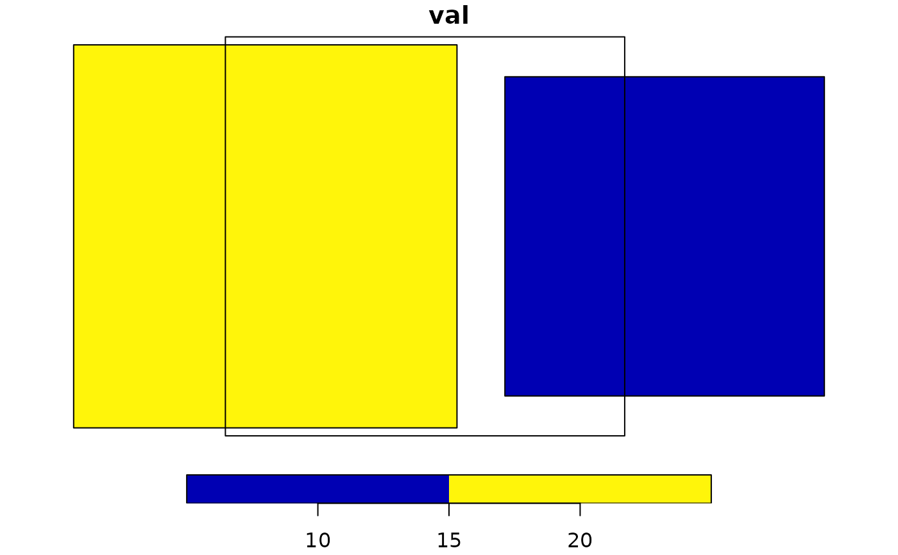

Area Weighted Intersection
Source:R/calculate_area_intersection_weights.R
calculate_area_intersection_weights.RdReturns the fractional percent of each feature in x that is covered by each intersecting feature in y. These can be used as the weights in an area-weighted mean overlay analysis where x is the data **source** and area- weighted means are being generated for the **target**, y.
This function is a light weight wrapper around the functions aw_intersect aw_total and aw_weight from the areal package.
Arguments
- x
sf data.frame source features including one geometry column and one identifier column
- y
sf data.frame target features including one geometry column and one identifier column
- normalize
logical return normalized weights or not.
Normalized weights express the fraction of **target** polygons covered by a portion of each **source** polygon. They are normalized in that the area of each **source** polygon has already been factored into the weight. Normalized weights are intended to be used with _intensive_ variables.
Un-normalized weights express the fraction of **source** polygons covered by a portion of each **target** polygon. This is a more general form that requires knowledge of the area of each **source** polygon to derive area-weighted statistics from **source** to **target**. Un-normalized weights are intended to be used with either _intensive_ or _extensive_ variables.
See details and examples for more regarding this distinction.
- allow_lonlat
boolean If FALSE (the default) lon/lat target features are not allowed. Intersections in lon/lat are generally not valid and problematic at the international date line.
Details
Two versions of weights are available:
`normalize = FALSE`, if a polygon from x (source) is entirely within a polygon in y (target), w will be 1. If a polygon from x (source) is 50 and 50 in each. Weights will sum to 1 per **SOURCE** polygon if the target polygons fully cover that feature.
For `normalize = FALSE` the area weighted mean calculation must include the area of each x (source) polygon as in:
> *in this case, `area` is the area of source polygons and you would do this operation grouped by target polygon id.*
> `sum( (val * w * area), na.rm = TRUE ) / sum(w * area)`
If `normalize = TRUE`, weights are divided by the target polygon area such that weights sum to 1 per TARGET polygon if the target polygon is fully covered by source polygons.
For `normalize = TRUE` the area weighted mean calculation requires no area as in:
> `sum( (val * w), na.rm = TRUE ) / sum(w)`
See examples for illustration of these two modes.
Examples
library(sf)
#> Linking to GEOS 3.12.1, GDAL 3.8.4, PROJ 9.4.0; sf_use_s2() is TRUE
source <- st_sf(source_id = c(1, 2),
val = c(10, 20),
geom = st_as_sfc(c(
"POLYGON ((0.2 1.2, 1.8 1.2, 1.8 2.8, 0.2 2.8, 0.2 1.2))",
"POLYGON ((-1.96 1.04, -0.04 1.04, -0.04 2.96, -1.96 2.96, -1.96 1.04))")))
source$area <- as.numeric(st_area(source))
target <- st_sf(target_id = "a",
geom = st_as_sfc("POLYGON ((-1.2 1, 0.8 1, 0.8 3, -1.2 3, -1.2 1))"))
plot(source['val'], reset = FALSE)
plot(st_geometry(target), add = TRUE)

(w <-
calculate_area_intersection_weights(source[c("source_id", "geom")],
target[c("target_id", "geom")],
normalize = FALSE, allow_lonlat = TRUE))
#> # A tibble: 2 × 3
#> source_id target_id w
#> <dbl> <chr> <dbl>
#> 1 1 a 0.375
#> 2 2 a 0.604
(res <-
merge(st_drop_geometry(source), w, by = "source_id"))
#> source_id val area target_id w
#> 1 1 10 2.5600 a 0.3750000
#> 2 2 20 3.6864 a 0.6041667
(intesive <- sum(res$val * res$w * res$area) / sum(res$w * res$area))
#> [1] 16.98795
(extensive <- sum(res$val * res$w))
#> [1] 15.83333
(w <-
calculate_area_intersection_weights(source[c("source_id", "geom")],
target[c("target_id", "geom")],
normalize = TRUE, allow_lonlat = TRUE))
#> # A tibble: 2 × 3
#> source_id target_id w
#> <dbl> <chr> <dbl>
#> 1 1 a 0.24
#> 2 2 a 0.557
(res <-
merge(st_drop_geometry(source), w, by = "source_id"))
#> source_id val area target_id w
#> 1 1 10 2.5600 a 0.2400
#> 2 2 20 3.6864 a 0.5568
(intensive <- sum(res$val * res$w) / sum(res$w))
#> [1] 16.98795